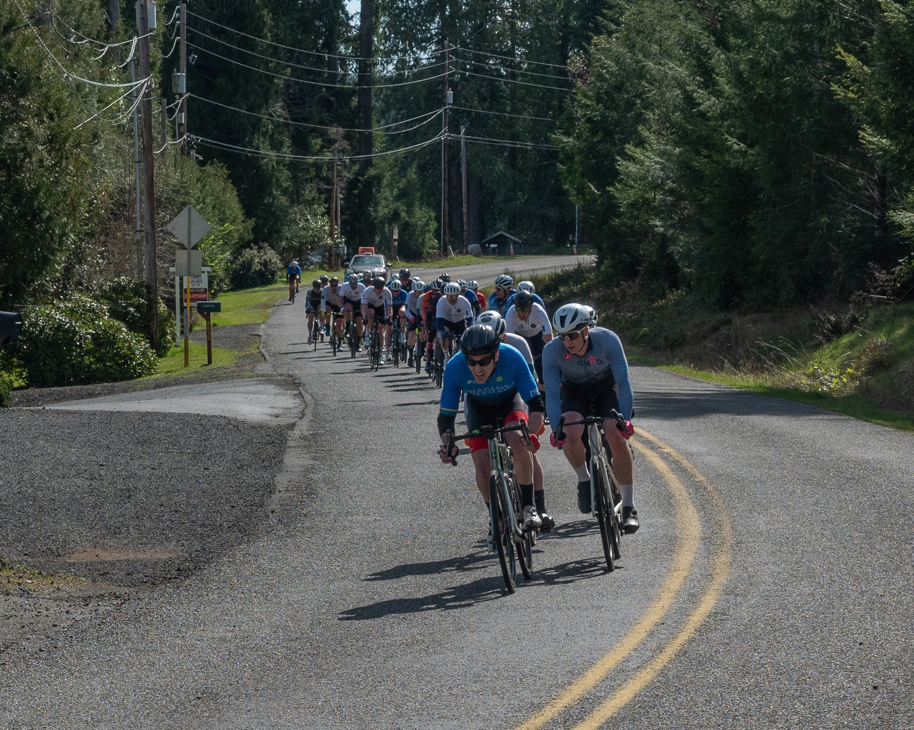
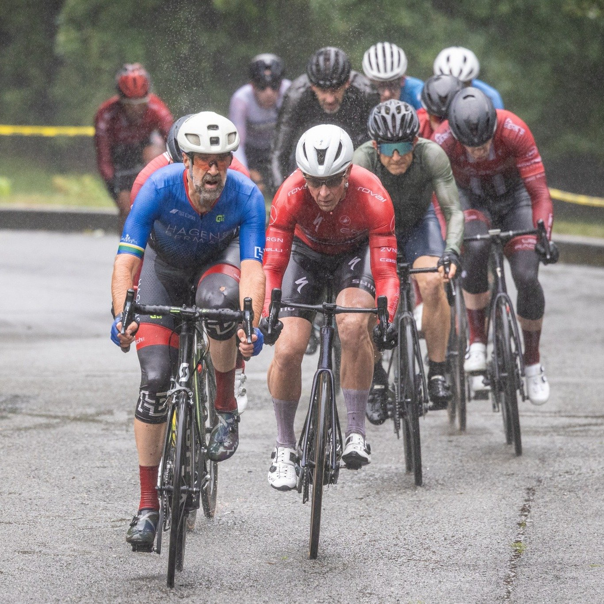
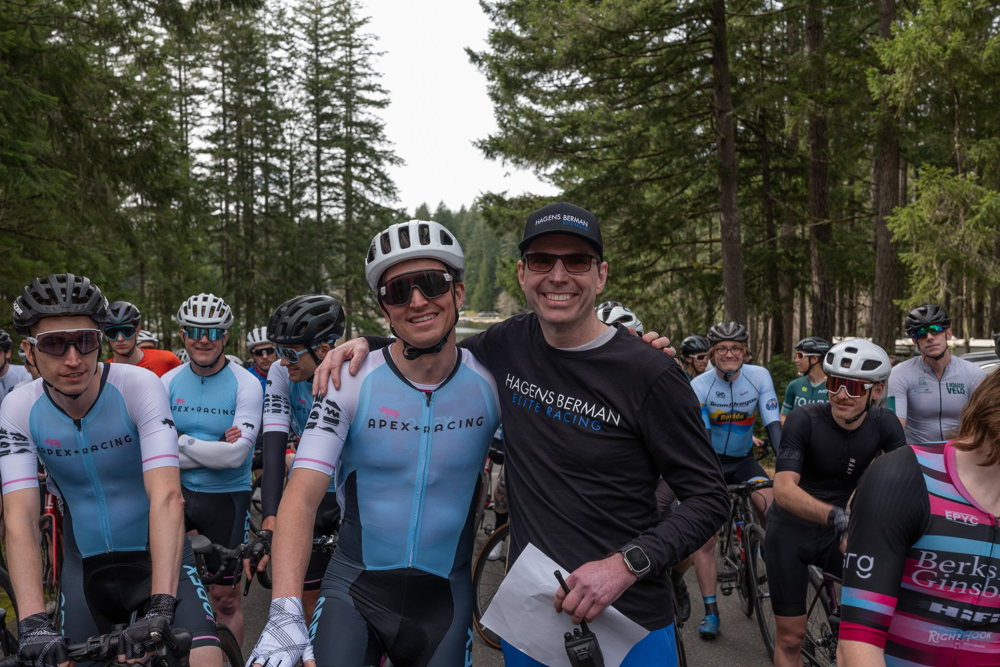
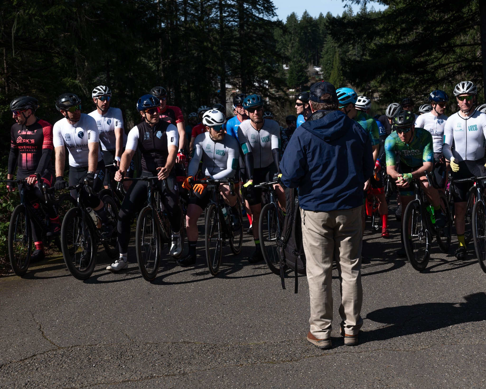
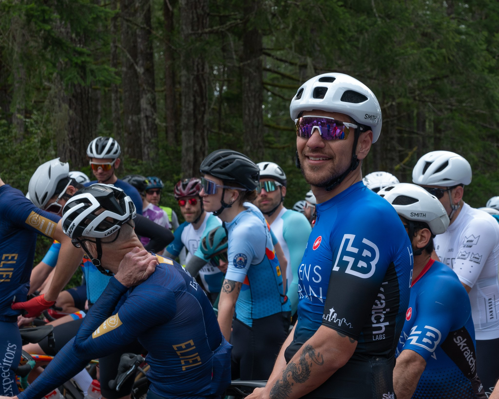

Photo archive · Mason Lake · Pacific Raceways
The archive.
Twenty-plus seasons of start lines, storm light, and blue kit in the wind — race-day frames shot by the team and its friends around the Pacific Northwest.
The contact sheet
Nine frames we keep coming back to — wet roads, storm light, and the minutes before the flag. Filed contact-sheet style; locations noted where the shutter went off.









Plate 01 — From the contact sheet Mason Lake / Mar 2026
“We race as a
team, not as a group
of individuals wearing the same kit.”
The rest lives on Instagram
Full Mason Lake 2026 galleries, WTNB nights at Pacific Raceways, training camps and everything in between — posted as the season unfolds.
Follow the team